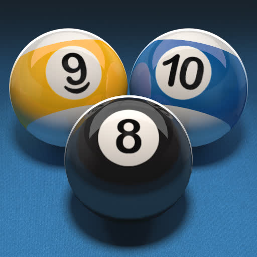

Del Dataset a la Detección
Un viaje a través del preprocesamiento de datos para entrenar un modelo de Inteligencia Artificial capaz de identificar bolas de billar en tiempo real.
De los Datos Crudos al Modelo Preparado
Desafío
El dataset original está en formato CSV, incompatible con el framework YOLO, que requiere archivos de texto (.txt) individuales por imagen y coordenadas normalizadas.
Propuesta
Desarrollar un script en Python para automatizar la conversión del CSV al formato YOLO, reorganizando la estructura de directorios y generando un archivo de configuración (`.yaml`).
Acciones
- Análisis del CSV con Pandas.
- Cálculo de coordenadas normalizadas.
- Creación de archivos `.txt` y `.yaml`.
- División y organización de datos (train/val/test).
Resultados
Un dataset 100% compatible con YOLO, estructurado, limpio y listo para ser la entrada de un ciclo de entrenamiento de modelo de detección de objetos.
Proceso Técnico de Conversión
Paso 1: Del Formato CSV a YOLO
El script de Python lee cada fila del archivo
_annotations.csv. Para cada objeto detectado, convierte las coordenadas del
bounding box (xmin, ymin, xmax, ymax) al formato que YOLO requiere:
class_id, center_x, center_y, width, height, con todos los valores
normalizados entre 0 y 1.
Lógica de Conversión (Python)
# Calcular coordenadas normalizadas
obj_class_id = class_to_id[obj_class_name]
center_x = (xmin + xmax) / 2 / img_width
center_y = (ymin + ymax) / 2 / img_height
bbox_width = (xmax - xmin) / img_width
bbox_height = (ymax - ymin) / img_height
# Escribir en el archivo .txt
f.write(f"{obj_class_id} {center_x:.6f} {center_y:.6f} {bbox_width:.6f} {bbox_height:.6f}\\n")Paso 2: Estructura de Directorios
Paralelamente, el script organiza las imágenes y las nuevas
etiquetas .txt en una estructura de carpetas estándar, separando los datos
en conjuntos de entrenamiento, validación y prueba. Esto es crucial para que el
framework de YOLO pueda localizar los datos correctamente.
Estructura Final Generada
tu_proyecto_billar/
├── data/
│ ├── images/
│ │ ├── train/ (imágenes de entreno)
│ │ ├── val/ (imágenes de validación)
│ │ └── test/ (imágenes de prueba)
│ └── labels/
│ ├── train/ (etiquetas .txt de entreno)
│ ├── val/ (etiquetas .txt de validación)
│ └── test/ (etiquetas .txt de prueba)
└── custom_data.yaml (archivo de config.)Conocimientos y Conceptos Aplicados
Arquitectura YOLO
"You Only Look Once" es un modelo de detección de objetos en tiempo real que destaca por su velocidad y eficiencia.
Preprocesamiento de Datos
Etapa crítica que consiste en limpiar, transformar y organizar datos crudos para mejorar el rendimiento y precisión del modelo.
Normalización de Coordenadas
Proceso de escalar los valores de las coordenadas a un rango [0, 1] para que el modelo sea independiente de la resolución de la imagen.
Bounding Box
Caja rectangular que marca la ubicación de un objeto en una imagen, definida por las coordenadas de sus esquinas.
Train/Val/Test Split
División del dataset en conjuntos para entrenar (train), ajustar hiperparámetros (validation), y evaluar el rendimiento final (test).
Archivo .yaml
Archivo de configuración que indica a YOLO las rutas a los datos, el número de clases y los nombres de las mismas.
Análisis del Dataset: Distribución de Clases
Esta gráfica muestra una distribución representativa de apariciones para cada tipo de bola. Permite identificar si el dataset está balanceado o si algunas clases están subrepresentadas.
Glosario de Términos
Conclusiones y Siguientes Pasos
Conclusiones Clave
- La preparación de datos es un pilar fundamental para el éxito de cualquier proyecto de Machine Learning.
- La automatización mediante scripts es esencial para manejar datasets de manera eficiente y reproducible.
- El formato YOLO estandariza el proceso de entrenamiento para modelos de detección de objetos.
Próximos Pasos
1. Entrenamiento del Modelo
Utilizar el dataset procesado para entrenar un modelo YOLOv8, aprovechando una GPU para acelerar el proceso.
2. Evaluación y Ajuste
Medir la precisión del modelo con el conjunto de 'test' y métricas como mAP. Ajustar hiperparámetros si es necesario.
3. Despliegue en Tiempo Real
Implementar el modelo final en una aplicación que procese vídeo desde una cámara web para detectar las bolas en directo.